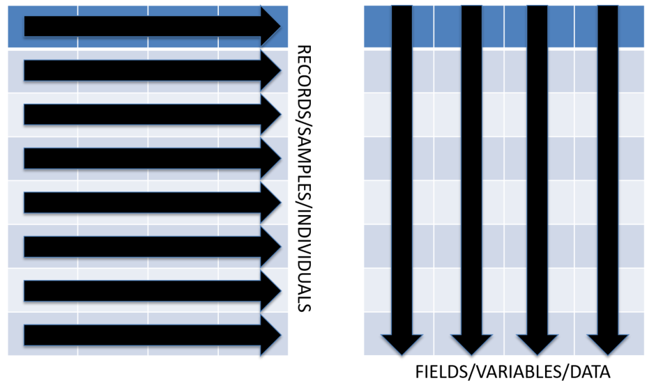

Introduction
R has existed for more than 20 years, but there has been explosive growth in R in the last five years. This has lead to the re-evaluation of how certain things are done in R.

The standard R data structure for many analyses is the data frame. Likewise, the standard R package for plotting is named graphics. If you continuing working in R, you will certainly encounter both.
However, new packages suchs as dplyr and ggplot2 are strongly supported by RStudio with Cheatsheets embedded in the RStudio Help menu. In addition, the naming conventions and syntax of these packages are more literate, making them easier to read, and uniform, making them easier to learn. Many of these packages have been gathered into a “meta-package” named tidyverse.
In this context, tidy has several meanings. First, tidy means that the packages work best with tidy data, rectangular data with records/observations/samples in rows and variables in columns. Second, tidy means that the R functions are easy to use with consistent syntax. Three, tidy means that the R code is structured so that it is literate and easy to follow.
Tibbles
The previous tutorial on vectors demonstrated that you can perform data analyses with simple R objects. However, this approach is fraught with potential problems because data in a vector has a specific order. If the values in a vector are changed, then mistakes can occur.
This tutorial covers tibbles, a modified version of a data frame, a very common R data structure similar to an Excel worksheet in some respects. Tibbles retain the best features of a data frame, but discard some problematics issues. In addition, tibbles have new features that make them very efficient for data analysis.
You have already worked with numeric and character vectors and a similar object called a factor. You used these objects to create plots and tables to explore data. This was possible because the data in these objects was parallel, i.e. the vectors were ordered so that data at each position applied across the vectors.
Run the cell below to produce a plot to illustrate this point.
vectorPlot()However, you can sort or reorder vectors, so what happens if your values are no longer aligned?
Run the cell below to produce a plot that illustrates this situation.
vectorPlotScrambled()As shown in the plot, the positions in vector B and C are no longer parallel with vector A. Any analysis that uses data in vector B or C will not be accurate.
So, how can you store data when multiple variables are stored for each sample, record or observation? The answer is a tibble, a series of linked vectors that create a rectangular data structure, i.e. there are rows and columns.
Run the cell below to generate a plot that illustrates the linked vectors of a tibbles.
dataframePlot()If you reorder the values in a tibble, all vectors in that tibble are also reordered.
Run the cell below to generate a plot that illustrates this.
dataframeSortPlot()Create a Tibble with read_delim
So, how do you make a tibble?
There are three ways to create a tibble.
- Use the function
tibbleto create one from scratch.
- Use the function
as_tibbleto convert a data frame to a tibble.
- Use the functon
read_delimto create a tibble from a text file.
The function read_delim will create a tibble by reading data from a text file. Reading data from a text file is likely the most common way to import data with R. There are many ways to organize data in a text file, and a common format has data arranged in rows and columns similar to an Excel worksheet. You can also import Excel worksheets, but that requires a different function.

The variables or columns in these files are separated or delimited by characters such as a tab or comma. In addition, each row of data terminates with a character string that indicates a new line.
When you started this tutorial, a tibble was created from the chunk below. In the context of a learnR tutorial, this step cannot be made interactive. You can see the code, but you cannot change it.
ar_exp <- read_delim(file="AR_Expression_cBioPortal.txt", delim="\t", col_names=TRUE)The argument delim="\t" indicates that the file has tab-delimited columns. The text pattern "\t" is how tabs are encoded in a plain text file. These special characters are usually hidden by text editors and word processors.
Note that the function read_delim was used and NOT read.delim. The first is a tidyverse R function that will create a tibble. The latter is an old school R function that will create a data frame. In general, do not use read.delim in this class!
The class of a tibble is confusing. It essentially has three classes. Importantly, it behaves much like the data frame.
class(ar_exp)To examine the data in a tibble, simply enter its name. In an RMarkdown document, you should be able to browse down the rows and across the columns. In addition, the size (rows and columns) and class of each variable should be shown (under the column names).
ar_expThis data was downloaded from cBioPortal and contains data for about 9100 samples from multiple cancer studies.
You can use summary to get a quick summary of each column or variable in a tibble. Remember the issue with rounding of numbers from the vectors lesson!
summary(ar_exp)Renaming Columns with rename
One problem with this data is that the column names contain special characters, i.e. spaces. Base R functions like read.delim (not read_delim) will fix these issues by replacing all special characters with a period. The tidyverse R function read_delim will leave your column names “as is”, but any column names with special characters must be used carefully.
Here is a quick example (jumping ahead a bit).
You can create a subset of a tibble by selecting specific columns by name without using quotes or back ticks. For example, we can select the variables Mutation and Value from ar_exp.
select(ar_exp, Mutation, Value)But, you will get an error if you try to select Cancer Study. You can fix this by flanking Cancer Study with backquotes (the key to the left of the number 1). Single quotes and double quotes work as well. In fact, in base R, column names must always be quoted, even if there are no special characters!
select(ar_exp, `Cancer Study`, Mutation)One advantage of tidyverse R is that you can use “naked” column names, i.e. no quotes. Therefore, we are going to fix the column names that have bad naming conventions. Here are some rules for valid names in R.
R Naming Conventions
- Names cannot start with a number.
- The only allowed special characters are the underscore and period, but do not begin names with these special characters. This is reserved for special cases.
- CamelCase and semiCamelCase are allowed, AND R IS CASE SENSITIVE!!
Renaming columns is simple with the function rename. The first argument is the tibble that you want to change. You then list the columns that you need to rename as new_name = old_name pairs. You may need to use backtick or quotes with the old column names, but you do not need to use them with the new names.
This expression is a simple example of recursion, i.e. we are creating an object named ar_exp from an object named ar_exp. Simply put, we are overwriting the old object. Recursive techniques are very common in computer programming, but you need to be careful, e.g. this chunk will only run properly once because the original column names are gone.
ar_exp <- rename(ar_exp,
Sample=`Sample Id`,
Study=`Cancer Study`,
Profile=`Profile Name`)
ar_expar_exp <- rename(ar_exp,
Sample=`Sample Id`,
Study=`Cancer Study`,
Profile=`Profile Name`)Now, we can manipulate the tibble more efficiently.
Extract Rows by Number with slice
Unlike Excel, with R you generally don’t see the data when you analyze it. With Rmarkdown, you can browse through a tibble. However, the are instances when you will need to extract specific rows and/or columns. There are multiple ways to do each of these operations.
You can extract a single row or multiple rows by row number with slice. For example, the chunk below will extract row 100.
slice(ar_exp, 100)You can extract a sequence of rows if you use slice with the colon operator, :.
slice(ar_exp, 11:20)You can use the sequence generation function, seq, to create complex sequences of numbers.
slice(ar_exp, seq(from=5, to=100, by=5))You can use the combine function, c, to extract a combination of specific rows.
slice(ar_exp, c(1, 13, 11, 5, 11, 3))In fact, you seldom need to extract rows by number, but the need may arise.
Extract Rows by a Variable with top_n
More frequently, you will want to extract rows based on the values of one or more of your variables (columns). You can do this with the function top_n. It requires three arguments.
- x = The tibble with the data.
- n = The number of rows to extract. Positive values extract the top
nrows and negative value extract the bottomnrows.
- wt = The variable to use to sort the data.
The chunk below will extract the samples with the ten highest values for AR expression.
top_n(ar_exp, 10, Value)Note, the rows are displayed in their original order, not in the sorted order.
You can see the bottom ten by using n = -10.
top_n(ar_exp, -10, Value)This also works with character variables, but you simply get the results of an alphabetical sort.
top_n(ar_exp, 10, Mutation)The function top_n transiently sorts your tibble. There is also a function that you can use to deliberatly arrange the rows of your tibble.
Extract Rows Using Boolean Expressions with filter
You can devise very complex ways to extract observations from your tibble with Boolean expressions. These filters use one or more of your variables and relational operators to construct a data filter.
The table below contains the most commonly used operators to construct Boolean expressions.
| English | R operator |
|---|---|
| equals | == |
| less than | < |
| greater than | > |
| less than or equal | <= |
| greater than or equal | >= |
| range | between |
| and | & |
| or | | |
| not | ! |
| evaluation order | () |
| table matching | %in% |
The result of a Boolean expression is a logical vector, i.e. a series of TRUE or FALSE (and sometimes NA) based on the number of values in the vector used in the expression.
Here is a simple example that determines which numbers are greater than 5 in the sequence 1:10.
1:10 > 5The chunk below will return TRUE for numbers between 2 and 4 inclusive.
between(1:10, 2, 4)You can use expression like this with the function filter to extract only the rows where you expression evaluates to TRUE. The chunk below will use exact matching to extract samples with the “Q58L” mutation.
filter(ar_exp, Mutation == "Q58L")We can narrow the filter by including a range for Value.
filter(ar_exp, Mutation == "Q58L" & between(Value, 3, 4))There are many other functions that we could use with filter, especially with character vectors, but we will save these for another tutorial.
Extract Columns as a Tibble with select
You can select one or more columns from a tibble with the function select. Importantly, the result is a new tibble that contains only the specified columns. The order of the columns in the new tibble is determined by the order in which you selected the variables, so select is frequently used to simply change the order of your variables (columns).
The chunk below will change the order of our columns and save it to ar_exp.
ar_exp <- select(ar_exp, Gene, Value, Mutation, Sample, Study, Profile)
ar_expThis operation does not really change the data in anyway. It simply changes the order of the columns. You can drop columns this way if you require only a subset of your data.
The chunk below will only retain three columns. In this case, we are not going to save the result to a new object.
select(ar_exp, Gene, Value, Sample)You can also use ranges of columns with the colon operator, :.
select(ar_exp, Gene:Mutation, Study)With the subtraction operator, -, you can drop specific columns.
select(ar_exp, -Gene, -Study)Extracting Variables with pull
The function select creates a tibble from a tibble. There are times when you may need to extract a column from a tibble as a vector.
Remember, a vector is the basic R data structure, and many useful R functions operate only on vectors.
The need to pull variables from a tibble is not always apparent when you try to combine tibbles with these base R functions. For example, the function nchar will determine the number of characters in a character vector.
Compare the result when we create a one column tibble for Mutation and count the number of characters.
mut_tb <- select(ar_exp, Mutation)
nchar(mut_tb)This appears to be the number of characters for all values in the Mutation column of the tibble.
Compare this to the result if we pull the variable Mutation from the tibble to make a character vector.
mut_v <- pull(ar_exp, Mutation)
nchar(mut_v)[1:100]I had to use the extraction operators, [], to limit the display to the first 100 values. The result is dramatically different because nchar is intended to return the number of characters for each value in a character vector. Not the sum total of all characters in the vector.
In fact, the result on the tibble is NOT the sum total of all characters in the Mutation variable. We can confirm this by calculating the sum on the vector.
mut_v <- pull(ar_exp, Mutation)
sum(nchar(mut_v))The result on the tibble is inexplicable. Generally, it is always best to pull a variable from a tibble if you need to use a non-tidyverse function on the variable.
Arrange Rows with arrange
When we used top_n above, the tibble was transiently sorted by a variable, and a result was returned.
You can use the function arrange to directly sort a tibble by one or more variables.
This chunk will sort our tibble by Value and Study, in ascending order. The first listed variable has precedent.
arrange(ar_exp, Value, Study)You can get the descending sort by adding desc.
arrange(ar_exp, desc(Value), Study)It should be obvious that functions such as filter, select, and arrange would work well together. How can you easily combine expressions? With base R, you would typically create a new object to store the results in stepwise fashion.
The chunk below will extract Study and Value for samples with the 20 highest values for AR expression where the gene is not mutated.
ar_exp_a <- filter(ar_exp, Mutation == "Not Mutated")
ar_exp_b <- arrange(ar_exp_a, desc(Value))
ar_exp_c <- slice(ar_exp_b, 1:20)
ar_exp_d <- select(ar_exp_c, Study, Value)
ar_exp_dHowever, the package magrittr provides a way that makes certain analyses much easier.
Combining Expressions with the Pipe Operator, %>%
You can join multiple R expressions with the pipe operator, %>%. Think of the pipe operator as the equivalent of the English word “then”. Each expression in a pipe is evaluated THEN passed to the next expression. The piped result is used as the value for the first argument of the next expression.
This is what we did previously in stepwise fashion.
- Filter to extract only sample that were not mutated, THEN
- Arrange the sample by descending order of AR expression, THEN
- Extract the first 20 samples, THEN
- Select only the study and expression value columns.
We can simply replace these steps with R code, joining the expressions with the pipe operator, %>%. When you use a pipe you do not need to specify the value for data argument except in the first expression. In fact, you will get an error. You can use a period, ., to indicate the piped value, but this is optional if the piped value is as the first argument.
filter(ar_exp, Mutation == "Not Mutated") %>%
arrange(., desc(Value)) %>%
slice(., 1:20) %>%
select(., Study, Value)What if we wanted to determine the mean value for these samples?
filter(ar_exp, Mutation == "Not Mutated") %>%
arrange(desc(Value)) %>%
slice(1:20) %>%
pull(Value) %>%
mean()It may not be obvious, but a pipe is similar to a function, a series of R expressions that can be reused to answer other questions.
For example, what about samples that have confirmed mutations?
filter(ar_exp, !(Mutation == "Not Mutated") & !(Mutation == "Not Sequenced")) %>%
arrange(desc(Value)) %>%
slice(1:20) %>%
select(Mutation, Value)The filter appears to work correctly.
filter(ar_exp, !(Mutation == "Not Mutated") & !(Mutation == "Not Sequenced")) %>%
arrange(desc(Value)) %>%
slice(1:20) %>%
pull(Value) %>%
mean()Writing a pipe is the first step in learning how to write a function or workflow.
Summarizing Data with group_by and summarize
The pipes above performed a summary on a group of samples determined by our filter. You can easily create summaries of groups of samples based on the values of your variables with group_by and summarize.
What if we wanted the mean expression of AR by cancer type? We can use group_by on Study then use summarize to create a new tibble with the mean.
The result is a new tibble with the columns Study (the grouping variable) and mean_AR, the variable a defined with summarize.
ar_exp %>%
group_by(Study) %>%
summarize(mean_AR = mean(Value))We can quickly add arrange to the pipe to get this is descending order.
ar_exp %>%
group_by(Study) %>%
summarize(mean_AR = mean(Value)) %>%
arrange(desc(mean_AR))You can add as many summary variables as you need. For example, you might want the standard deviation, sd.
ar_exp %>%
group_by(Study) %>%
summarize(mean_AR = mean(Value), sd_AR=sd(Value)) %>%
arrange(desc(mean_AR))A data summary is often the first step in an analysis. Later, we will combine this with data visualization using ggplot2.
Tallying Groups of Observations with count
Another type of summary is to simply tally or count the number of samples in a given group. This can be a very useful operation to build a contigency table for statistical analysis.
The function count, will group your observations by the specified variables and simply tally the number of rows.
For example, how many samples are there for each study?
ar_exp %>%
count(Study, sort=TRUE)You can include as many grouping variables as you need.
ar_exp %>%
count(Study, Mutation, sort=TRUE)Note that the result it a tibble with the number of observations as a variable named n.
Saving a Tibble with write_delim
Several times we created tibbles that you might want to save as a text file. The general function for this is write_delim, but there are several versions of this function with different default arguments. Here is an example to save the count table produced above as a tab-delimited text file. Note, this is not an exercise, so the code is not interactive.
ar_exp %>%
count(Study, Mutation, sort=TRUE) %>%
write_delim(x=., path="study_mutation_count.txt", delim="\t", col_names=TRUE)Tibbles are likely the most useful data structure to use in R. They are equivalent to Excel worksheets in many respects, but are much less prone to data corruption. Tibbles also mesh very well with many data visualizations and statistical tests. These will be covered in later tutorials.
Quiz
Time for a short quiz. Use the help menu or try various answers as much as you want. There is no penalty for multiple attempts. If you are stuck, click the Hints button to get progressive hints. The last hint is the answer!
Question 1
Which variable in ar_exp would be the most useful factor?
Question 2
How many samples have a Value of less than zero?
#Enter your code below.filter()filter(ar_exp)filter(ar_exp, Value)filter(ar_exp, Value < 0)Question 3
How many samples have the Q63L mutation?
#Enter your code below.count(ar_exp)count(ar_exp, Mutation)count(ar_exp, Mutation) %>%
filter()count(ar_exp, Mutation) %>%
filter(Mutation == "Q63L")Question 4
Produce a summary table for mean AR expression grouped by study and mutation sorted from highest to lowest value.
#Enter your code below.ar_exp %>%ar_exp %>%
group_by()ar_exp %>%
group_by(Study, Mutation) %>%ar_exp %>%
group_by(Study, Mutation) %>%
summarize(mean_AR=mean(Value)) %>%ar_exp %>%
group_by(Study, Mutation) %>%
summarize(mean_AR=mean(Value)) %>%
arrange(desc(mean_AR))Challenge question. How can you determine the number of samples in each group above?
There are many more things that you can quickly do with data in a tibble. Future tutorials will show you how to add or change columns and visualize the data in a tibble.